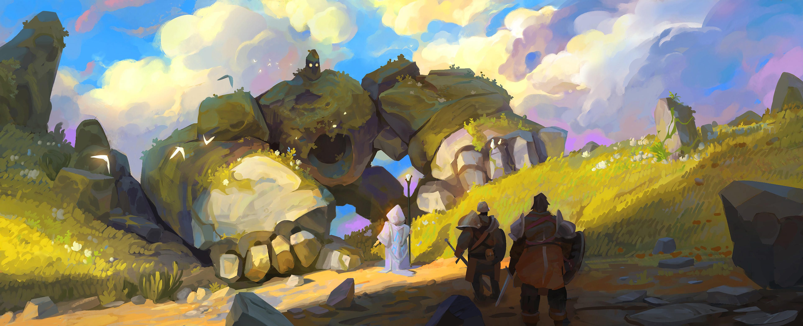

Bem-vindo à Hélia, este é um espaço dedicado a criação seu próprio personagem para uma aventura de RPG medieval.
Escolha sua raça, sua classe, distribua seus atributos, selecione seus equipamentos e escreva a história do seu personagem.
O livro de aventuras para criação do seu personagem

Bem-vindo à Hélia, este é um espaço dedicado a criação seu próprio personagem para uma aventura de RPG medieval.
Escolha sua raça, sua classe, distribua seus atributos, selecione seus equipamentos e escreva a história do seu personagem.
Antes de entrar em Solmaris, precisa-se de uma boa ficha de personagem.
Sua aventura começa aqui!
Progresso da criação do personagem:
"Toda grande aventura começa com um primeiro passo."
Livro dos Aventureiros de Hélia
Hélia é o universo medieval utilizado neste projeto para a criação de personagens e aventuras de RPG.
Conheça as classes, raças, atributos, equipamentos e magias antes de criar seu personagem.